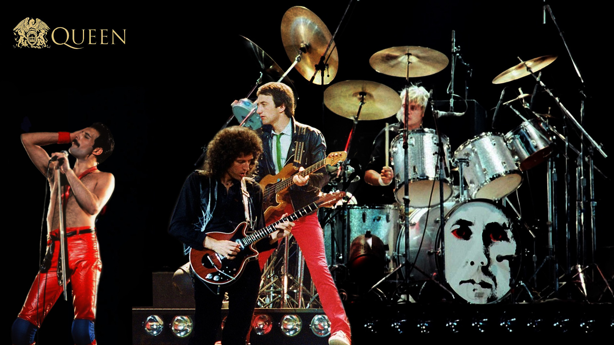

Queen was one of the most popular, ambitious and beloved classic rock band ever.
The London group created an elaborate, perfection-minded sonic approach informed by classical flourishes, ornate piano passages, stacked harmonies, layered guitars and theatrical arrangements.
Throughout their career, Queen achieved commercial and critical success, courtesy of hits such as "Bohemian Rhapsody," "We Will Rock You" and "Crazy Little Thing Called Love."
Even early in their career, Queen had grand ambitions. The band eagerly solicited feedback from fans who attended gigs, and spent several years refining and defining their sound and stage presence before launching full-scale live shows.
This long gestation had somewhat to do with the band's college commitments. Guitarist Brian May was studying physics and math, while bassist John Deacon focused on electronics. But the patience also pointed to Queen's meticulous nature: the quartet were sticklers for sound quality and were determined to release music that met their exacting standards.
Thankfully, the group found kindred spirits in producers Roy Thomas Baker and, later, Reinhold Mack. Under their watch, Queen honed an elaborate sonic approach: classical flourishes, ornate piano passages, stacked harmonies, layered guitars and theatrical arrangements. The band valued cabaret-style drama and performance art ingenuity as much as it did traditional rock. Thanks to Mercury's expressive, operatic and vibrato-rich voice, Queen could pull off this combination with aplomb.
The band originally coalesced in London in 1970 around two members of the local band Smile—May and drummer Roger Taylor—and vocalist Freddie Mercury, a talented art school graduate who had been toiling away in a number of nonstarter bands. The nascent group cycled through several bassists before Deacon signed on in 1971, which crystallized the Queen lineup that would endure for the next 20 years.
The band recorded their 1973 self-titled debut album at Trident Studios in fits and starts, owing to May and Deacon's school schedule and the band's perfectionist nature. Despite the painful genesis, Queen ended up a fully-formed explosion of tough-as-nails hard rock and metal and glittery glam.
1974's Queen II featured a more subdued, expansive sound rife with fantastical imagery and a prog-folk vibe. But it also featured several hallmarks of the soon-to-be-classic "Queen sound," including intricate vocal harmonies and prominent piano. That set the stage for 1974's Sheer Heart Attack, Queen's U.S. and U.K. breakthrough album, which featured the carnival-esque, piano-loopy hit "Killer Queen" and proto-punk "Stone Cold Crazy."
Buoyed by this success, the band outdid themselves with 1975's landmark A Night At The Opera, an over-the-top album highlighted by the Broadway-esque worldwide hit "Bohemian Rhapsody." That song also came paired with an artistic promo music video, which became one of the most influential clips within the nascent medium.
For the rest of the '70s, Queen enjoyed a string of successful albums and singles. These hits alternated between soaring, triumphant anthems such as "Somebody To Love," "We Are The Champions" and "We Will Rock You," and more whimsical, heartfelt pop fare such as "You're My Best Friend" and "Bicycle Race."
1980's The Game was the band's commercial peak in the U.S., thanks to the strutting, disco-inspired "Another One Bites The Dust" and the bluesier "Crazy Little Thing Called Love," while 1981's David Bowie duet "Under Pressure" also featured a sleek, bass-heavy sound.
By this time, Queen's penchant for flamboyant costumes and onstage surprises—such as Mercury's penchant for arriving for the encore on the shoulders of a man dressed like Darth Vader or Superman—as well as fiery musicianship made their concerts must-attend events. Massive audiences became the norm: a free 1976 Hyde Park show drew an estimated 150,000-200,000 people, while two 1981 shows in Brazil drew over 250,000 ticketed attendees.
In the early '80s, Queen's sound evolved to reflect new wave's danceable rhythms and keyboard-dominated sound. Although this era produced the hits "Radio Gaga" and "I Want To Break Free," it heralded the end of Queen's most commercial period. A powerful Live Aid performance followed in 1985, as did several albums which nodded to their rock-oriented days.
Starting in 1986, Mercury was dogged with rumors about his failing health: more specifically, that he had contracted AIDS. Queen's lack of tour dates and photos of the vocalist looking unwell exacerbated the gossip, even as the band and Mercury himself stayed mum and continued making music.
Sadly, on November 24, 1991—a day after releasing a statement confirming his AIDS diagnosis and asking for privacy, and eight months after Queen released the Innuendo LP— Mercury passed away from pneumonia.
Over the years, Queen songs have become pop culture touchstones. "Bohemian Rhapsody" was used for a pivotal scene during Wayne's World, which helped the song re-enter the U.S. singles charts and peak at No. 2 in 1992, while "We Are The Champions" remains a perennial celebratory anthem for championship-winning sports teams.
Queen still tours today with former American Idol contestant Adam Lambert, who ably fills in for Mercury on lead vocals. The band's music is in heavy rotation on classic rock radio, and "Bohemian Rhapsody" continues to enjoy nearly universal acclaim. In fact, in recent years, the song has enjoyed yet another resurgence, thanks to a fortieth anniversary vinyl reissue and a faithful cover by Panic! At The Disco.
Inductees: John Deacon (bass; born August 19, 1951), Brian May (guitar; born July 19, 1947), Freddie Mercury (vocals; born September 5, 1946, died November 24, 1991), Roger Taylor (drums; born July 26, 1949)